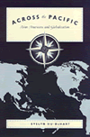
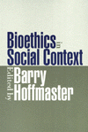
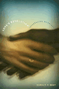

| 
|
Across
the Pacific
Asian Americans and Globalization
Hu-DeHart, Evelyn
How transnational relationships and interactions in Asian American
communities are manifested
New in Paperback!
232 pp • 6x9 • Spring 1999
paper 1-56639-824-X
EAN 978-1-56639-824-4
|
|
|
Agricultural
and Pastoral Societies in Ancient and Classical History
Adas, Michael
An in-depth examination of the early history of humankind
376 pp • 7x10 • Fall 2000
paper 1-56639-832-0
EAN 978-1-56639-832-9
cloth 1-56639-831-2
EAN 978-1-56639-831-2
|
|
|
Atlanta
Race, Class, and Urban Expansion
Keating, Larry
Troubling stories about private interests over public development
in Atlanta
248 pp • 6x9 • Fall 2000
paper 1-56639-821-5
EAN 978-1-56639-821-3
cloth 1-56639-820-7
EAN 978-1-56639-820-6
|
|
|
Before
Roe
Abortion Policy in the States
Nossiff, Rosemary
A groundbreaking look at abortion politics among parties and interest
groups
216 pp • 5.5x8.25 • Fall 2000
paper 1-56639-810-X
EAN 978-1-56639-810-7
cloth 1-56639-809-6
EAN 978-1-56639-809-1
|
| 
|
Bioethics
in Social Context
Hoffmaster, Barry C.
Arguing for—and against—the value and practice of ethnography
in medicine
248 pp • 6x9 • Fall 2000
paper 1-56639-845-2
EAN 978-1-56639-845-9
cloth 1-56639-844-4
EAN 978-1-56639-844-2
|
| 
|
The
Disability Rights Movement
From Charity to Confrontation
Fleischer, Doris Zames, and Frieda Zames
The struggle for disability rights in the U.S.
312 pp • 7x10 • Fall 2000
paper 1-56639-812-6
EAN 978-1-56639-812-1
cloth 1-56639-811-8
EAN 978-1-56639-811-4
|
|
|
Exiled
Memories
Stories of Iranian Diaspora
Sullivan, Zohreh
A moving portrait of the Iranian �migr� community grappling with
life in the U.S.
328 pp • 6x9 • Fall 2000
paper 1-56639-843-6
EAN 978-1-56639-843-5
cloth 1-56639-842-8
EAN 978-1-56639-842-8
|
|
|
Extradition,
Politics, and Human Rights
Pyle, Christopher
A compelling history of U.S. extradition
456 pp • 7x10 • Fall 2000
paper 1-56639-823-1
EAN 978-1-56639-823-7
cloth 1-56639-822-3
EAN 978-1-56639-822-0
|
|
|
Forgotten
Conquests
Rereading New World History from the Margins
Verdesio, Gustavo
Re-reading Uruguay's colonial history
216 pp • 7x10 • Fall 2000
paper 1-56639-834-7
EAN 978-1-56639-834-3
cloth 1-56639-833-9
EAN 978-1-56639-833-6
|
|
|
From
Puerto Rico to Philadelphia
Puerto Rican Workers and Postwar Economies
Whalen, Carmen
A history of Puerto Rican immigration to Philadelphia
328 pp • 7x10 • Fall 2000
paper 1-56639-836-3
EAN 978-1-56639-836-7
cloth 1-56639-835-5
EAN 978-1-56639-835-0
|
|
|
Habitat
for Humanity�
Building Private Homes, Building Public Religion
Baggett, Jerome
An interview study of Habitat for Humanity� as a voluntary organization
and as a social form of religion
360 pp • 6x9 • Fall 2000
paper 1-56639-803-7
EAN 978-1-56639-803-9
cloth 1-56639-802-9
EAN 978-1-56639-802-2
|
|
|
Help
Your Marriage Survive the Death of a Child
Rosenblatt, Paul
Advice to couples and counselors about how to deal with the death
of a child
200 pp • 5.5x8.25 • Fall 2000
paper 1-56639-805-3
EAN 978-1-56639-805-3
cloth 1-56639-804-5
EAN 978-1-56639-804-6
|
|
|
Holy
Leisure
Recreation and Religion in God's Square Mile
Messenger, Troy
An accessible account of the first permanent religious meeting
ground in the U.S.
192 pp • 6x9 • Fall 2000
paper 1-56639-841-X
EAN 978-1-56639-841-1
|
|
|
Introduction
to Animal Rights
Your Child or the Dog?
Francione, Gary L., and Alan Watson
A guidebook for examining our personal and ethical beliefs about
human treatment of animals
Previously Announced
372 pp • 6x9 • Fall 2000
paper 1-56639-692-1
EAN 978-1-56639-692-9
cloth 1-56639-691-3
EAN 978-1-56639-691-2
|
|
|
Land
of the Giants
New York's Polo Grounds
Thornley, Stew
A rich history of one of the most hallowed of former baseball parks
192 pp • 7x10 • Fall 2000
cloth 1-56639-796-0
EAN 978-1-56639-796-4
|
| 
|
Larry
Kane's Philadelphia
Kane, Larry, and Dan Rather
A first-hand look at Philadelphia's important events and people
280 pp • 6x9 • Fall 2000
cloth 1-56639-806-1
EAN 978-1-56639-806-0
|
| 
|
Love's
Revolution
Interracial Marriage
Root, Maria P.P.
A contemporary snapshot of interracial marriage
240 pp • 6x9 • Fall 2000
paper 1-56639-826-6
EAN 978-1-56639-826-8
cloth 1-56639-825-8
EAN 978-1-56639-825-1
|
|
|
The
Maya Diaspora
Guatemalan Roots, New American Lives
Loucky, James, and Marilyn M. Moors
How Maya refugees found new lives in strange lands
248 pp • 6x9 • Fall 2000
paper 1-56639-795-2
EAN 978-1-56639-795-7
cloth 1-56639-794-4
EAN 978-1-56639-794-0
|
| 
|
National
Insecurity
U.S. Intelligence After the Cold War
Eisendrath, Craig, foreword by Tom Harkin
Practical solutions for the reform of national security operations
New in Paperback!
296 pp • 6x9 • Fall 1999
paper 1-56639-848-7
EAN 978-1-56639-848-0
|
|
|
Out
in the South
Dews, Carlos, and Carolyn Law
An absorbing collection of writings about gay and lesbian life
in the South
256 pp • 7x10 • Fall 2000
paper 1-56639-814-2
EAN 978-1-56639-814-5
cloth 1-56639-813-4
EAN 978-1-56639-813-8
|
|
|
Paper
Son
One Man's Story
Chin, Tung Pok, Winifred C. Chin, and K. Scott Wong
A rare, first person account of an experience shared by thousands
of Chinese
184 pp • 5.5x8.25 • Fall 2000
paper 1-56639-801-0
EAN 978-1-56639-801-5
cloth 1-56639-800-2
EAN 978-1-56639-800-8
|
|
|
Philadelphia's
Cultural Landscape
The Sartain Family Legacy
Martinez, Katharine, and Page Talbott
A vividly illustrated history of a Philadelphia family dynasty
of artists
211 pp • 8.5x11 • Fall 2000
cloth 1-56639-791-X
EAN 978-1-56639-791-9
|
|
|
Political
Woman
Florence Luscomb and the Legacy of Radical Reform
Strom, Sharon Hartman
An absorbing biography of a woman who made politics the centerpiece
of a long and useful life
352 pp • 7x10 • Fall 2000
paper 1-56639-819-3
EAN 978-1-56639-819-0
cloth 1-56639-818-5
EAN 978-1-56639-818-3
|
|
|
Prison
Masculinities
Sabo, Don, Terry Kupers, and Willie London
Activists, academics, and prisoners shed light on male hierarchy
in prison and in society
296 pp • 7x10 • Fall 2000
paper 1-56639-816-9
EAN 978-1-56639-816-9
cloth 1-56639-815-0
EAN 978-1-56639-815-2
|
|
|
Sexual
Strangers
Gays, Lesbians, and Dilemmas of Citizenship
Phelan, Shane
One of the field's most innovative thinkers reconsiders the status
of non-heterosexuals as citizens of the U.S.
232 pp • 6x9 • Fall 2000
paper 1-56639-828-2
EAN 978-1-56639-828-2
cloth 1-56639-827-4
EAN 978-1-56639-827-5
|
|
|
The
Study of Religion in an Age of Global Dialogue
Swidler, Leonard, and Paul Mojzes
Answering questions about religion and its place in our lives and
our world
240 pp • 6x9 • Fall 2000
paper 1-56639-793-6
EAN 978-1-56639-793-3
cloth 1-56639-792-8
EAN 978-1-56639-792-6
|
| 
|
The
Sum of Our Parts
Mixed-Heritage Asian Americans
Williams-Leon, Teresa, Cynthia Nakashima, and Michael Omi
A groundbreaking look at mixed-heritage Asian Americans
296 pp • 7x10 • Fall 2000
paper 1-56639-847-9
EAN 978-1-56639-847-3
cloth 1-56639-846-0
EAN 978-1-56639-846-6
|
|
|
The
Trial Lawyer's Art
Schrager, Sam
The truth about courtroom craft
New in Paperback!
264 pp • 6x9 • Spring 1999
paper 1-56639-799-5
EAN 978-1-56639-799-5
|
|
|
Untidy
Gender
Domestic Service in Turkey
Ozyegin, Gul
Interviews with Turkish maids yield surprising facts about class
and gender roles
272 pp • 6x9 • Fall 2000
paper 1-56639-808-8
EAN 978-1-56639-808-4
cloth 1-56639-807-X
EAN 978-1-56639-807-7
|
|
|
The
Woman I Was Not Born To Be
A Transsexual Journey
Brevard, Aleshia
An absorbing autobiography of a transsexual
272 pp • 6x9 • Fall 2000
paper 1-56639-840-1
EAN 978-1-56639-840-4
cloth 1-56639-839-8
EAN 978-1-56639-839-8
|
|
|
Women
in 1900
Gateway to the Political Economy of the 20th Century
Bose, Christine E.
An exploration of women's place in the U.S. political economy
272 pp • 5x8 • Fall 2000
paper 1-56639-838-X
EAN 978-1-56639-838-1
cloth 1-56639-837-1
EAN 978-1-56639-837-4
|
|
|
Yellow
Journalist
Dispatches from Asian America
Wong, William
What does it mean to be Asian American?
288 pp • 6x9 • Fall 2000
paper 1-56639-830-4
EAN 978-1-56639-830-5
cloth 1-56639-829-0
EAN 978-1-56639-829-9
|
| 
|
Yellow
Light
The Flowering of Asian American Arts
Ling, Amy
Is there a distinctive Asian American creative sensibility?
New in Paperback!
384 pp • 7x10 • Spring 1999
paper 1-56639-817-7
EAN 978-1-56639-817-6
|